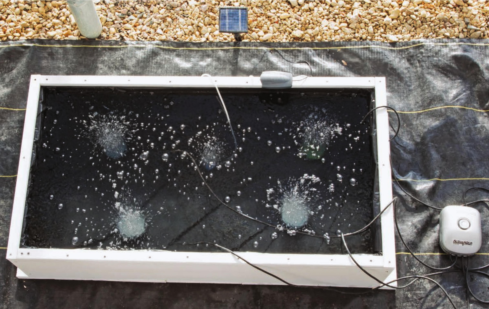

Adding Nutrient Solution, Aeration, and Transplanting Fill the reservoir with water to 1 V4-inch below the start of the furring strip. This will be about 1 0-inch deep of water, approximately 50 gallons. Use a hydroponic fertilizer at the recommended rate on the fertilizer bottle or bag. Mix the fertilizer into the water thoroughly until fully dissolved. See the System Maintenance chapter for nutrient solution management strategies, including target EC and pH ranges. Optional: Adding an air pump can improve plant growth and reduce the risk of root rot. The air pump to the right of the reservoir is a four-outlet 1 5 liter/minute pump that is connected to four 4-inch round air stones spaced evenly in the reservoir. This air pump provides great aeration. The smaller air pump placed on the top rim of the reservoir is connected to a small solar panel. This small pump has one outlet and provides at most one-fourth the output of the larger air pump, and only in optimal conditions with full sun. A solar-powered air pump is more expensive but it has the ability to provide the benefits of aeration without an electric bill, and the system can be placed anywhere with sunlight. Float the raft in the reservoir and transplant your seedlings. Stone wool seedlings work great in this system but nearly any hydroponic substrate will work in a floating raft garden. Substrates that hold a lot of water like coco or peat plugs will require more attention because they may have overwatering issues when the plant is young Adding aeration to a floating raft system is not essential for leafy greens but it generally improves crop health and increases potential yield.
